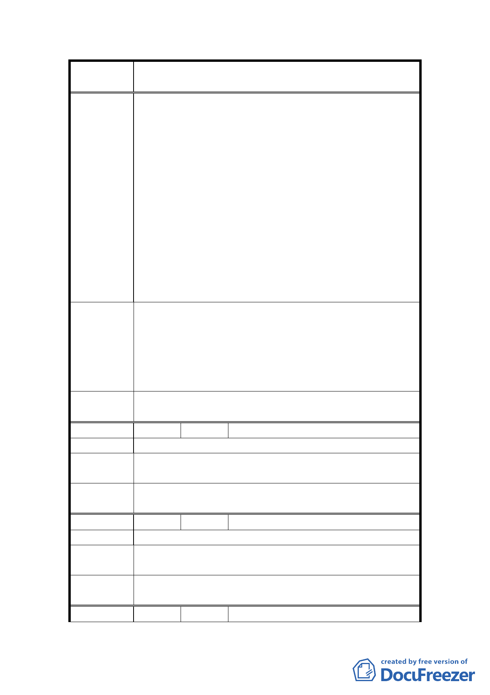

案
名
變更臺北市士林區三玉段一小段 22-3 地號等體育場用
地（天母運動公園）為臺北市立體育學用地主要計畫案
上班時間悄悄召開，不僅缺乏實質程序正義，更不符
合尊重市民之社區主義精神。
3.市民至今 94 年 11 月 21 日聞公園即將變更地目為體院
校地日起，群情憤慨，經短短十數天連署，反對該項
變更人數已逾兩萬人，目前仍繼續連署中，在台灣社
區發展數十年中，實為罕見，可見市府施政不得不重
視市民社區意識抬頭及重視審議式民主精神。
4.據北市體院內部刊物指出，除遷校於公園地目之規劃
外，更將發展成為體育大學，此一規劃亦可能再次遷
校，實有浪費數十億公帑之嫌。
5.民國 85 年指定公園為市體院用地之初，尚未有職棒
場、高島屋、新光三越等大型場所進駐，目前該區每
日交通負荷已形飽和，一旦市體院遷入，更為加深負
荷。
1.臺北市立體育學院應立即停止一切校舍建設行動。
2.「天母運動公園」任何變更地目之行政程序應有本地
建議辦法
區市民代表之參與意見，並在針對本案召開都市計畫
審議會議前舉行公聽會，以讓委員能聽取市民意見。
3.建請台北市立體育學院另覓校地，以還給市民公共運
動空間。
委員會決
議
同編號 1。
編 號 3 陳情人 天山里黃里長世豐
陳 情 理 由 政府不能違反當時徵用地使用原則－天母運動公園。
建議辦法
維持現況使用，不變更使用分區地目，供市民休憩運動
空間。
委員會決
議
同編號 1。
編 號 4 陳情人 天山里里民王瑤如
陳 情 理 由 都發局沒權力，人民有權利決定我們的需求嗎
建議辦法
希望體院能遷校至關渡平原，其地較適合國家級之體院
需求（地較大）。
委員會決
議
同編號 1。
編 號 5 陳情人 張文錦
12